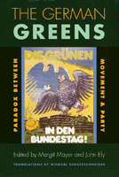

<body bgcolor="#FFFFFF" text="#000000" link="#0000FF" vlink="#CC0000" alink="#CC0000"><center><hr width="350" size="1" align="center" noshade>Critical essays analyze the crucial tensions shaping the first ten years of the German Greens<hr width="350" size="1" align="center" noshade><p><a href="https://cdcshoppingcart.uchicago.edu/Cart/ChicagoBook.aspx?ISBN=9781566395151&&PRESS=temple" target="_top">Buy this book!</a> | <a href="https://cdcshoppingcart.uchicago.edu/Cart/Cart.aspx?PRESS=temple" target="_top">View Cart</a> | <a href="https://cdcshoppingcart.uchicago.edu/Cart/Cart.aspx?PRESS=temple" target="_top">Check Out</a></p><p></p></center><!--none//--><h1>The German Greens</h1>
<H2>Paradox between Movement and Party</H2>
<h3>edited by Margit Mayer and John Ely, translated by Michael Schatzschneider</h3>
<P>cloth 1-56639-515-1 $90.50, May 98, <FONT COLOR=#990033>Available</FONT>
<br>paper 1-56639-516-X $38.95, May 98, <FONT COLOR=#990033>Available</FONT>
<BR> 352 pp
6x9
17&nbsp;tables 8&nbsp;halftones
</P><p>The Greens have been not only a political force and social conscience for Germany before reunification and after but also an inspiration to political groups and movements in many other countries. The Greens have raised the issues of ecology, gender, and grassroots democracy in protest against government. They have also had the rare opportunity to try converting themselves into a political party that works within the system.
<p>This is a book about their paradoxical situation and about the dilemmas all advocates of change face when they become powerful enough to negotiate with the status quo. The critical essays by German social scientists and activists also provide a detailed picture of the dynamics of the German Greens&#151where their support has come from, the nature of the competing factions, and the place of feminism. The editors provide a substantial introduction.
<p>The flavor and texture of the Greens&#151including their raucous public arguments and their innovative campaign tactics&#151are suggested by the political posters included in the book and by a whole section of primary documents.
<p>The documents and the essays (except for one originally written in English) have been translated from German. The result is to make available to English-speaking readers a view of a complex movement whose very name and color have become synonymous with social action in favor of the environment and the empowerment of people.
<BR>&nbsp;<h2>Reviews</h2>
<p><i>"...virtually all [essays] provide useful treatments of important questions relevant to the movement-party 'paradox.' ...</i>The German Greens<i> merits the attention not only of students of Green and German parliamentary politics, but of anyone interested in a case study of the adaptation of an outsider group to insider and institutionalized status."</i>
<br>&#151<b><i><a href="http://www.findarticles.com/p/articles/mi_qa3854/is_199910/ai_n8877410" target="new">Environmental History</a></i></b>
<BR>&nbsp;<h2>Contents</h2><P>
<p><b> Part I. Introduction</b>
<br>1. Success and Dilemmas of Green Party Politics &#150 Margit Mayer and John Ely
<p><b>Part II. Emergence and Characteristics of the West German Green Party</b>
<br>2. A Brief History of the German Green Party &#150 Horst Mewes
<br>3. From Competing Factions within the Green Party to the Rise of <i>Realos</i> &#150 Roland Roth and Detlef Murphy
<br>4. Who Votes Green? Sources and Trends of Green Support &#150 Lutz Mez
<p><b>Part III. In Parliament: Green Principles in Real Politics</b>
<br>5. What Happens to Green Principles in Electoral and Parliamentary Politics? &#150 Lilian Klotzsch, Klaus K&ouml;nemann, J&ouml;rg Wischermann, and Bodo Zeuner
<br>6. Green Feminism in Parliamentary Politics &#150 Claudia Pinl
<br>7. The Phantasm of Grassroots Democracy &#150 Alex Demirovic
<p><b>Part IV. Positions in the Debate: How to Resolve the Paradox</b>
<br>8. From Youth to Maturity: The Challenge of Party Politics &#150 Claus Offe
<br>9. A Party Is Not a Movement and Vice Versa &#150 Joachim Hirsch
<p><b>Part V. Beyond Germany</b>
<br>10. Green Politics in Europe and the United States &#150 John Ely
<p><b>Part VI. Documents</b>
<br>11. Founding Documents
<br>12. Position Papers of the Main Factions within the Green Party
<br>13. New Themes in Old Parliaments: Parliamentary Speeches and Party Statements
<br>14. Programmatic Texts and Resolutions
<p>Selected Annotated Bibliography of English-Language Publications
<br>Selected Annotated Bibliography of German-Language Publications
<br>About the Contributors
<br>Index
</P><BR>&nbsp;<H2>About the Author(s)</H2>
<table><tr><td valign="top"><img src="/tempress/authors/422_au1.gif" height="90" width="75"></td><td width="100%" valign="middle"><p><B>Margit Mayer</B> is Professor of Politics at the Free University of Berlin. She has also taught at the New School for Social Research and the University of California, Santa Cruz.</P></td></tr></table><P><B>John Ely</B> is a long-time commentator on social movements in Germany.</P>
<BR><H2>Subject Categories</H2>
<p>
<BR><A HREF="/tempress/political.html" TARGET="_top">Political Science and Public Policy</a>
</p>
<p align="center"><a href="https://cdcshoppingcart.uchicago.edu/Cart/ChicagoBook.aspx?ISBN=9781566395151&&PRESS=temple" target="_top">Buy this book!</a> | <a href="https://cdcshoppingcart.uchicago.edu/Cart/Cart.aspx?PRESS=temple" target="_top">View Cart</a> | <a href="https://cdcshoppingcart.uchicago.edu/Cart/Cart.aspx?PRESS=temple" target="_top">Check Out</a></p><p><font face="Arial" size="1"><a href="copyright.html" onMouseOver="window.status='Web Copyright Policy';return true;" onMouseOut="window.status=''" title="Web Copyright Policy">&copy;</a> 2015 <a href="http://www.temple.edu" target="new" onMouseOver="window.status='Link to Temple University home page';return true;" onMouseOut="window.status=''" title="Link to Temple University home page">Temple University</a>. All Rights Reserved. http://www.temple.edu/tempress/titles/422_reg.html</font></p>